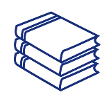

Sitio web Sitio oficial del ISTQB
Portal oficial con los esquemas de certificación internacional en testing.
Visitar webSelección de documentación oficial, normas ISO, libros y comunidades.
Portal oficial con los esquemas de certificación internacional en testing.
Visitar webResumen del modelo SQuaRE con la división de evaluación de calidad.
Descargar PDF
Guía fundamental sobre principios y técnicas de pruebas de software.
Ver referenciaOrganización global sobre buenas prácticas en desarrollo ágil y Scrum.
Explorar portal